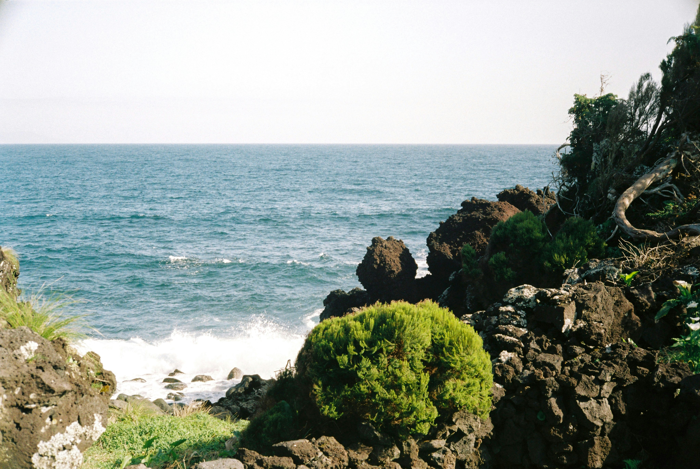
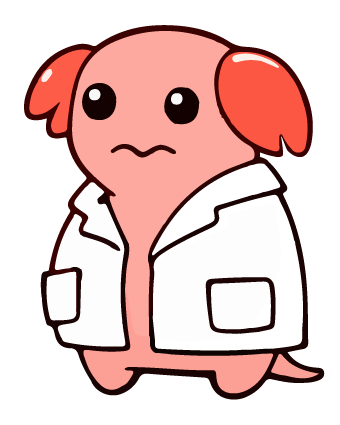

越前海岸の特徴
越前海岸は福井県中西部、越前岬を中心とした日本海に面する海岸です。 国定公園に指定されており、海岸に沿って広がる階段上の断崖は、絶好のロケーションです。
海中でも階段状の地形を有しており、植物プランクトン豊富な魚の生息に適した環境からか一年を通して様々な魚介類が獲れます。特に冬期シーズンの「越前がに」が有名で、全国からその美味を求めて訪れる人が絶えません。
また、水仙の日本三大群生地の一つであり、冬になると山の斜面には可憐な「越前水仙」が華々しく咲き誇ります。


越前海岸の魚たち
越前海岸で獲れる魚たちをご紹介します。
冬の代表格「越前がに」をはじめ、多種多様な
魚たちが一年を通じて漁獲されています。
